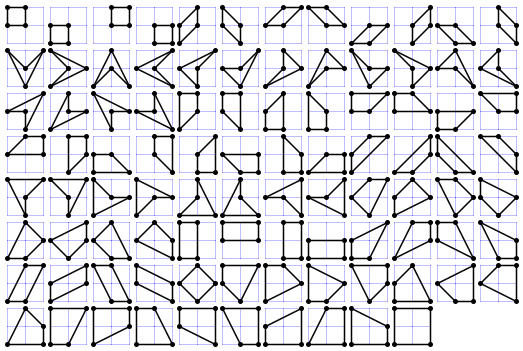

A simple quadrilateral is a polygon that has four distinct vertices, has no straight angles and does not self-intersect.
Let $Q(m, n)$ be the number of simple quadrilaterals whose vertices are lattice points with coordinates $(x,y)$ satisfying $0 \le x \le m$ and $0 \le y \le n$.
For example, $Q(2, 2) = 94$ as can be seen below:

It can also be verified that $Q(3, 7) = 39590$, $Q(12, 3) = 309000$ and $Q(123, 45) = 70542215894646$.
Find $Q(12345, 6789) \bmod 135707531$.
solve(m=2, n=2) → ?solve(m=12345, n=6789) → ?